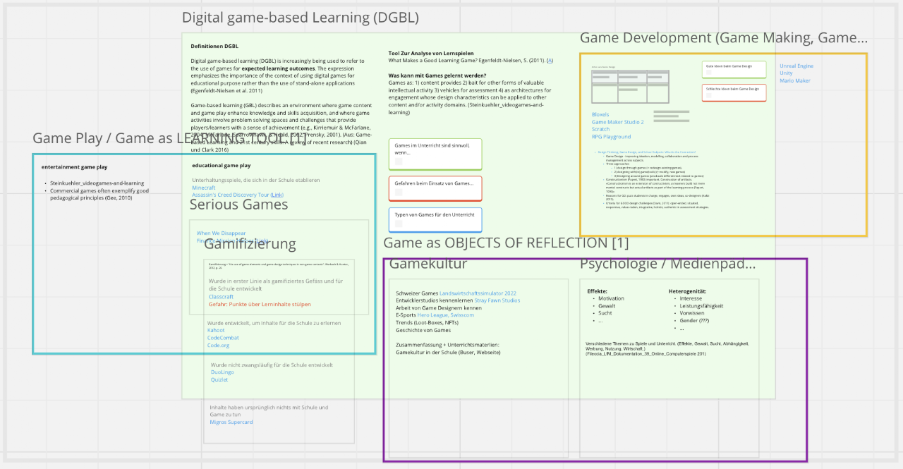

Übersicht: Games und Game Design im Unterricht
Wie können Games im Unterricht thematisiert werden? Die Forschung zum Digital Game Based Learning unterscheidet drei Hauptzugänge – sie bilden auch die drei Lernbereiche von eduGaming.ch.

Ludic Culture Hub
Der Ludic Culture Hub ist ein Projekt der Digitalisierungsinitiative der Zürcher Hochschulen (DIZH). Er vernetzt Hochschulen, Kulturinstitutionen und Praxis rund um das Spiel und untersucht, wie Spielkultur Innovation, Bildung und Transformation fördern kann. Die PH Zürich bringt dabei die Perspektive der Bildung ein – von der Forschung bis ins Schulzimmer.
Dimension Ludic Education
Wie lassen sich Games und Game Design im Unterricht wirksam einsetzen? Schüler:innen entwickeln eigene Spiele und bauen dabei gestalterische, informatische und überfachliche Kompetenzen auf.
Flagship «Game Design Festival der Schule»
Schüler:innen und Lehrpersonen stellen ihre selbst entwickelten Spiele öffentlich aus – vom 14. bis 24. Juni 2027 auf dem Kulturplatz der PH Zürich. Verschiedene Weiterbildungskurse befähigen Lehrpersonen, Game Design in ihrem Unterricht umzusetzen.
Praxispartner
- Primarschule Pfäffikon – Renato Kälin
- Sekundarschule Seehalde – Matthias Lang
Weitere Forschungsprojekte
-
Game Design als Unterrichtsmethode im Zyklus 2
Bernadette Spieler, Larissa Meyer-Baron, Janine Trütsch
-
Edugame4Change
Tobias Röhl, Judit Martines Moren, Nicole Wespi, Eliane Burri
-
IMPACT+ – Orbit Cleaner
Informative Mini-Games for Programming Concepts and Computational Thinking: Brett- und App-Spiel für die 3. und 4. Klasse.
Publikationen
-
From Consoles to Classrooms: Preliminary Insights About Pre-Service Teachers and Video Games
Masiar Babazadeh, Adrian Degonda, Bernadette Spieler, Luca Botturi · SUPSI (DFA/ASP) und PH Zürich
-
Digital Games in Schools: A Qualitative Study on Teacher's Beliefs
Bernadette Spieler, Adrian Degonda
-
The Science Behind the Art of Engaging: Online Tutoring in Games and Coding
Bernadette Spieler · 15th European Conference on Games Based Learning, 23.–24. September 2021